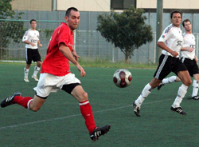
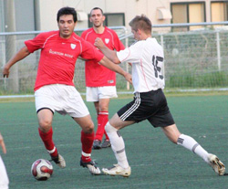
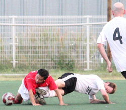
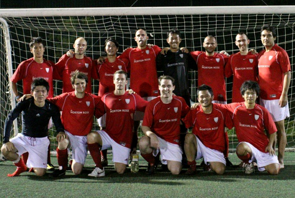

|
Hachioji Park, Saturday 4th September
Six-nil will do for starters and not bad for a team fielding no major pre-season signings. Clinical finishing and some impressive possession football did for a Sala side which was never really at the races.
Deepest Saitama. Train hell. How many years have we been doing this for. Jay Bailey back in the line-up. Old school. If only we still had the 'Eigotown' kit.
Two minutes gone: 1-0. It usually takes at least an hour to break down Sala, who will have had the hump at letting an up-and-under slip bobble all the way through to Paul Wadsworth, who cheekily prodded the ball home to leave Filet Mignon a little crispy around the edges.
Less than 10 minutes gone: 2-0. 'Ello, 'ello. Carlos Aranda (who else?) decided he was bored with playing keepy-uppy and smashed the ball over Mignon (more down his throat really but you don't want to get in the way of the Paraguayan's shots really) for a sexy second goal. Mignon grilled.
Shosuke Yamagishi, guilty of over-elaborating once or twice, jinked into the Sala box and was tripped, despite the howls of protestation, giving the referee little option but to point to the spot. Yamagishi himself rolled the ball inside the post to boil's Mignon's filet.
There was the odd scare at the back for BFC with Sala's extra size causing trouble from set pieces but BFC's keep-ball was 80's Liverpool at times, minus the perms and arse-clinging shorts.
Period two brought more of the same, Yamagishi causing problems for Sala but not for the forwards as he steadfastly refused to pass to options one through four lining up wide open in the middle. If only his brain matched his libido.
Yamagishi it was who made it 4-0 however, racing clear and tucking a tidy little dinker-donker into the far corner with Sala's over-stretched players now looking very tired and Filet Mignon frankly not what I ordered.
Shota Kikuchi, comfortably the smallest player in the world, let alone the TML league, wriggled clear to slip in number five for BFC with 15 minutes to go before celebrating with regular fan Paco Pomares, who towers over the pint-sized midfielder.
Jon 'the salmon' Day leapt (although you would have struggled to get a copy of the Daily Mirror under him, it was a 'leap') to head in a sixth to complete the rout and doubtless scare the living daylights out of the rest of the TML.
'We want our title back' as some joker famously said, before YCAC walked off with it!
And I'm spent. And I'm out of jokes about steak.
Report by Pinky and Diane

|